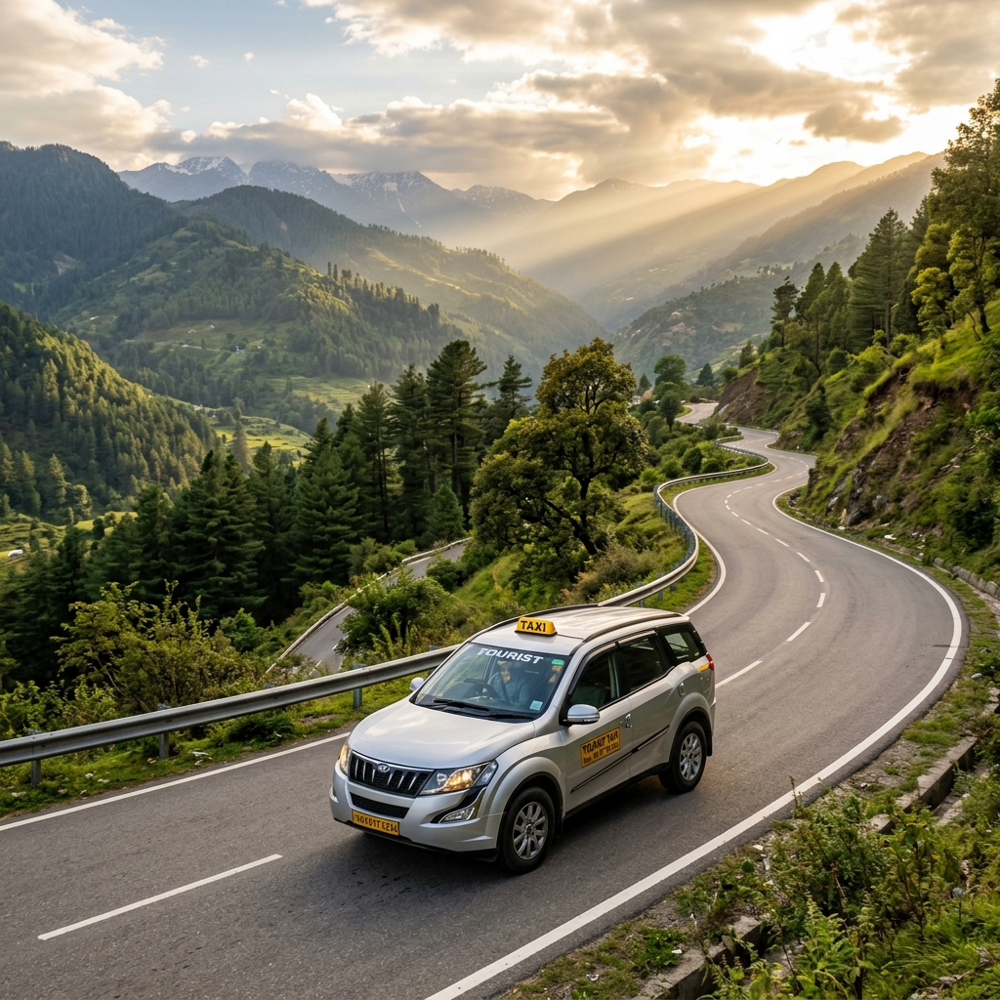
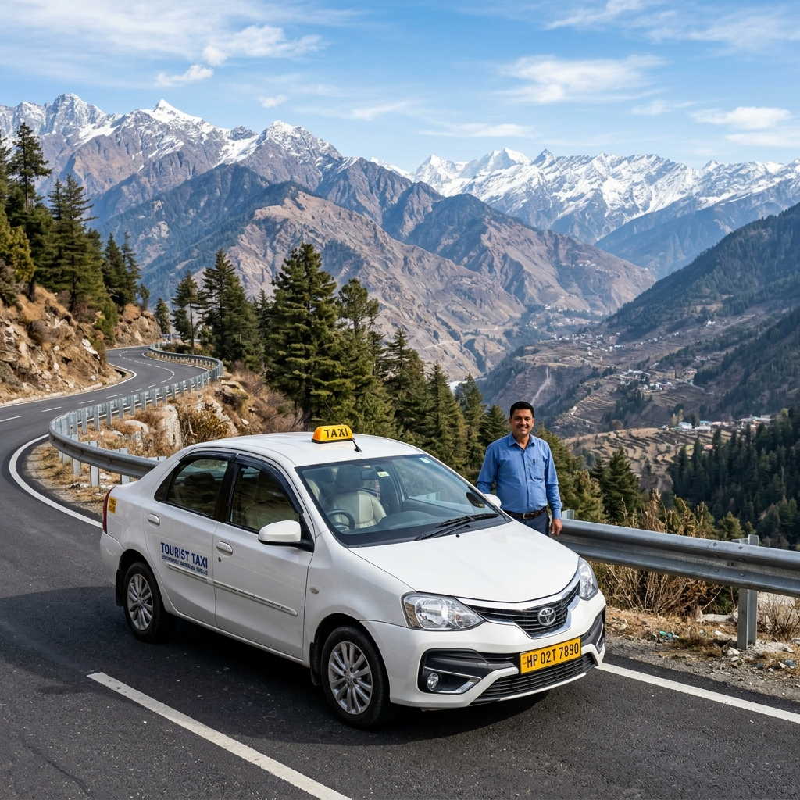
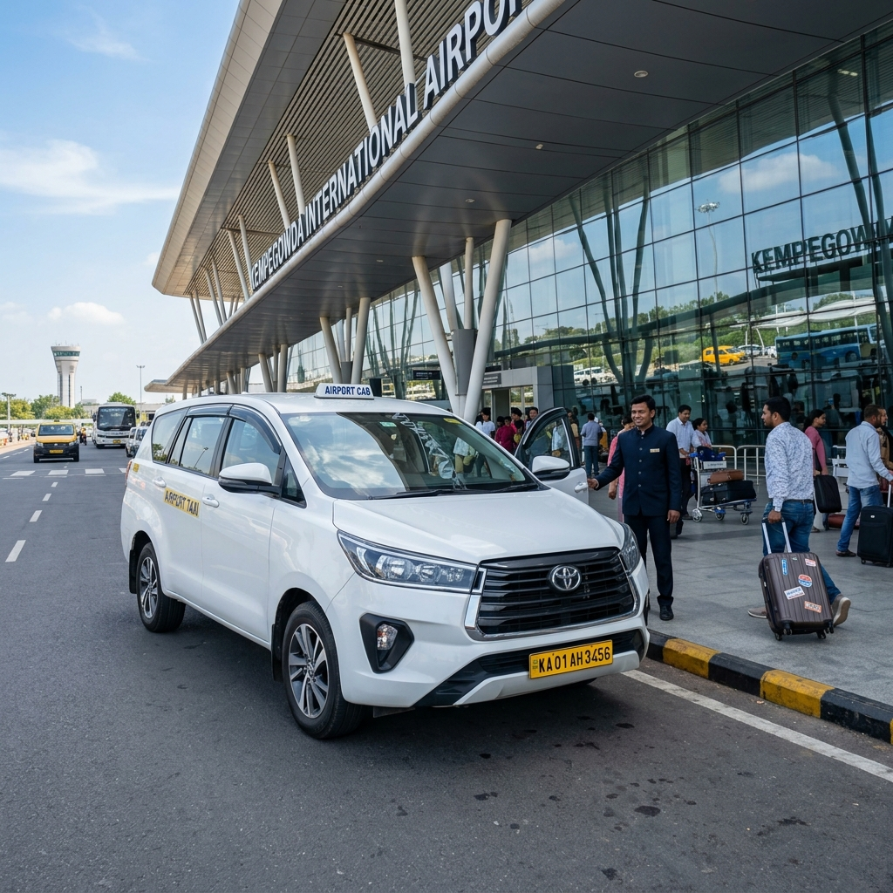
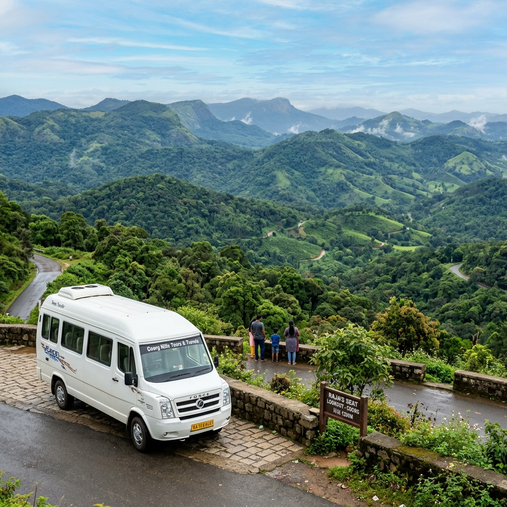

Reliable Outstation Taxi Service from Coorg
Travel comfortably from Coorg to major cities and tourist destinations across Karnataka and beyond with our dependable outstation taxi service. Whether you're heading to Bangalore for business, Mysore for a weekend getaway, or planning a longer journey to other South Indian destinations, we provide safe, punctual, and comfortable transportation with experienced drivers who know the routes well.
Popular Outstation Destinations from Coorg
| Destination | Distance | Estimated Time | Sedan (Etios/Desire) | SUV (XUV/Innova) | Innova Crysta | Tempo Traveller (9-12 Seater) |
|---|---|---|---|---|---|---|
| Coorg to Bangalore | 260 km | 5-6 hours | ₹4,500 | ₹5,500 | ₹6,500 | ₹8,500 |
| Coorg to Mysore | 120 km | 2.5-3 hours | ₹2,200 | ₹2,800 | ₹3,400 | ₹4,500 |
| Coorg to Mangalore | 140 km | 3-3.5 hours | ₹2,500 | ₹3,200 | ₹3,800 | ₹5,000 |
| Coorg to Hassan | 115 km | 2.5-3 hours | ₹2,100 | ₹2,700 | ₹3,300 | ₹4,300 |
| Coorg to Coimbatore | 240 km | 5-6 hours | ₹4,200 | ₹5,200 | ₹6,200 | ₹8,200 |
| Coorg to Ooty (Udhagamandalam) | 90 km | 2.5-3 hours | ₹1,800 | ₹2,300 | ₹2,800 | ₹3,600 |
| Coorg to Madikeri (Local) | 25 km | 45-60 minutes | ₹600 | ₹800 | ₹1,000 | ₹1,300 |
Why Choose Our Outstation Taxi Service?
- Experienced drivers with expertise in long-distance routes
- Well-maintained vehicles suitable for long journeys
- Fixed, transparent pricing with no hidden charges
- 24/7 availability for early morning or late-night departures
- Comfortable ride with ample legroom and luggage space
- GPS tracking for added safety and peace of mind
- Clean and hygienic vehicles
- Assistance with toll payments and route planning
Vehicle Options for Outstation Travel

Sedan Cars
Etios, Desire, or similar - ideal for 1-4 passengers with luggage
SUVs
Ertiga, XUV500, or similar - comfortable for families up to 6 passengers

Innova Crysta
Premium MPV with extra space and comfort for outstation travel

Tempo Traveller
9-12 seater perfect for larger groups and family outstation travel
Additional Services for Outstation Trips
- Multiple pick-up and drop-off points within Coorg
- Flexible scheduling - early morning, late night, or specific times
- Option for return journey booking
- Waiting charges applicable only after complimentary waiting period
- Baby seats available on request (advance notice required)
- Newspapers and water bottles provided for long journeys
Frequently Asked Questions - Outstation Cabs
Do you provide one-way or round-trip services?
We offer both one-way and round-trip outstation services. For round-trips, we often provide discounted rates compared to booking two separate one-way journeys. Please specify your requirement when booking.
Are toll charges and state taxes included in the fare?
Our quoted fares include all toll charges, state taxes, and driver allowances. The price you see is the final amount you'll pay, with no hidden charges. However, any additional expenses like parking fees or waiting charges beyond the complimentary period would be extra.
What happens if I need to make stops during the journey?
We accommodate reasonable stops during the journey for refreshments, restroom breaks, or sightseeing. Additional waiting charges may apply for stops exceeding 15 minutes each, unless otherwise agreed upon during booking.
How do I handle payment for outstation trips?
We accept cash payments to the driver at the end of the journey. For advance bookings, we may request a small advance amount via online transfer or UPI. We're working on implementing online payment options for future convenience.